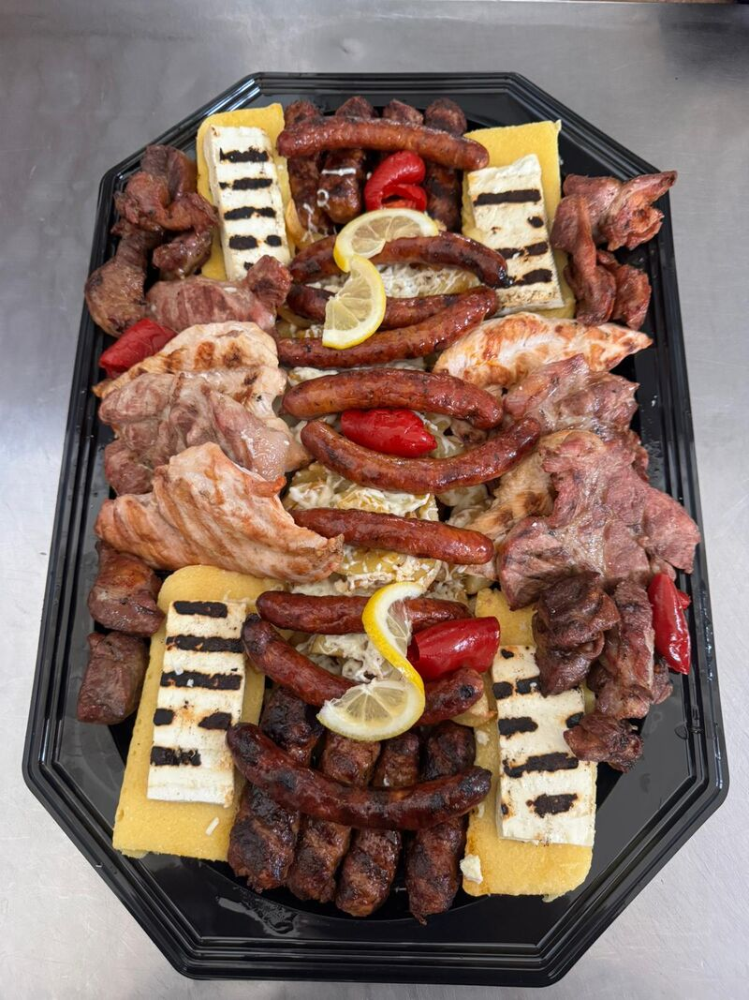
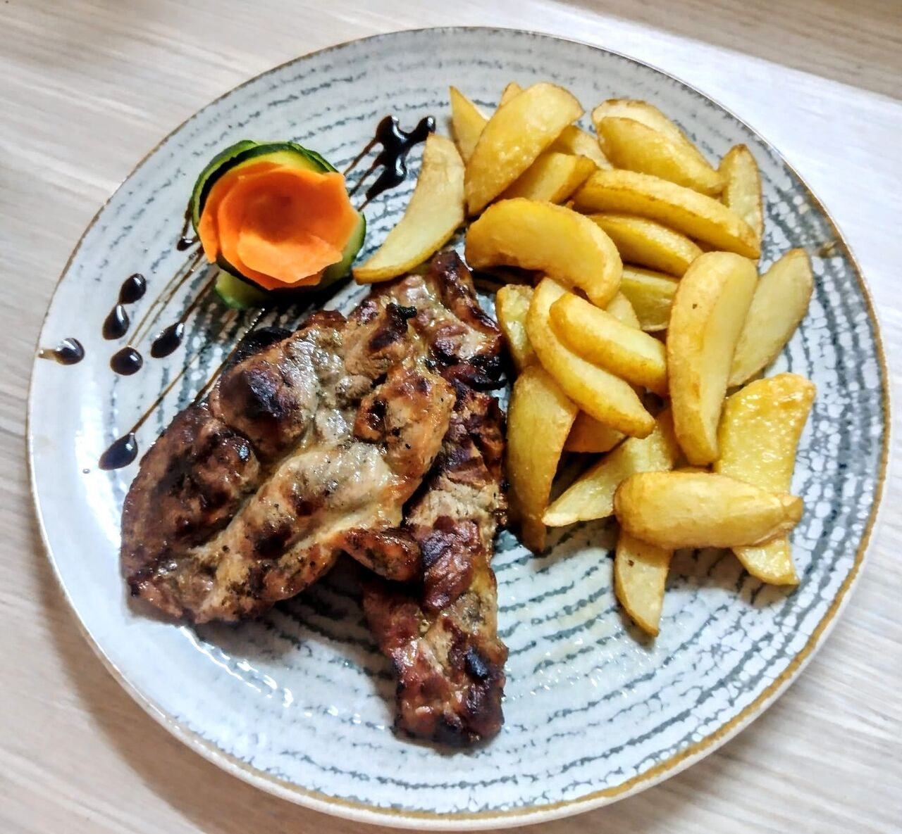
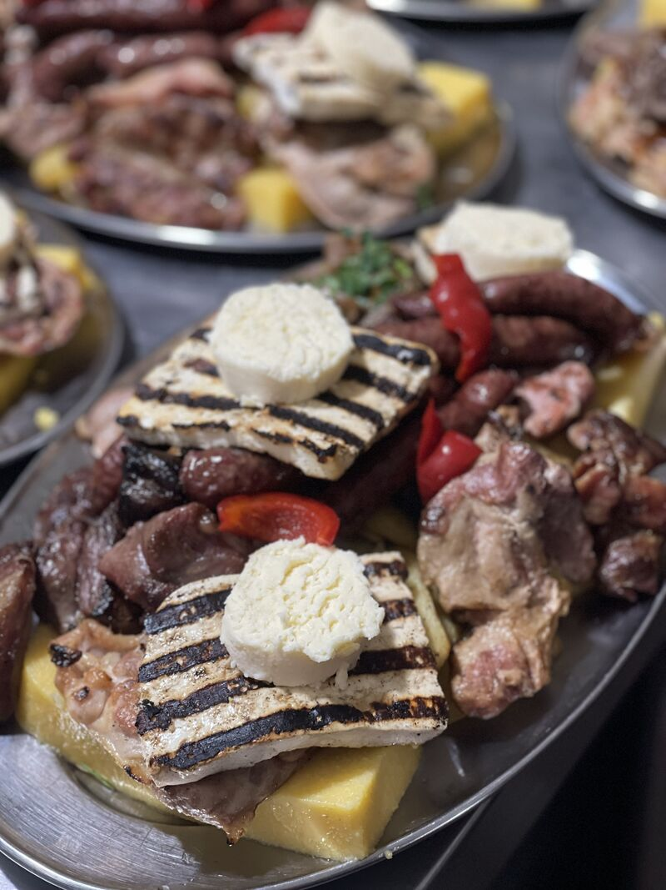
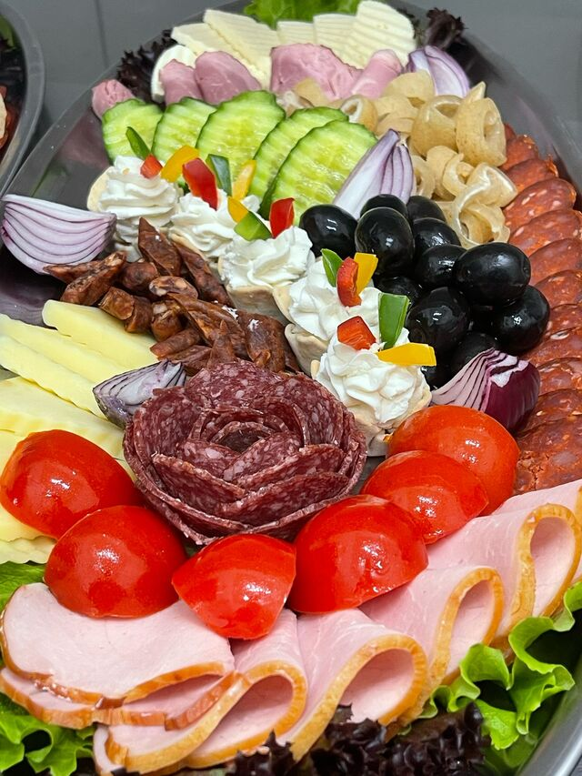
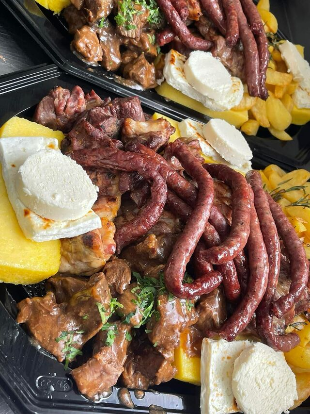
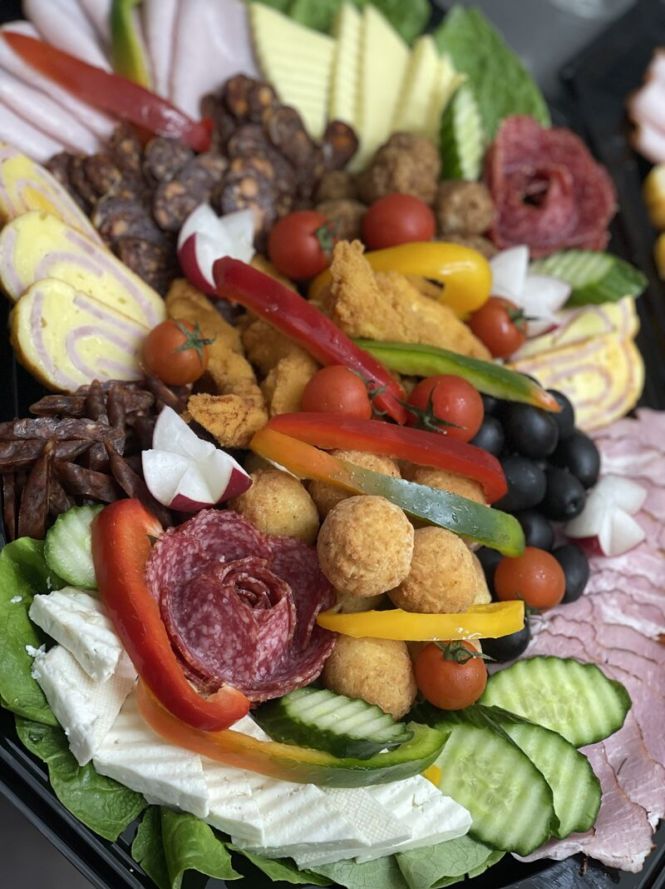
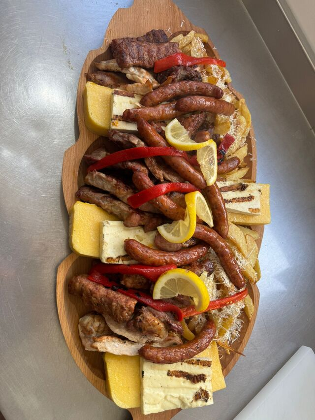
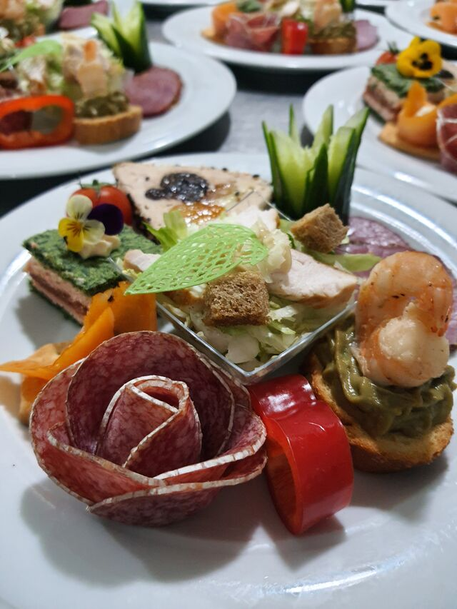
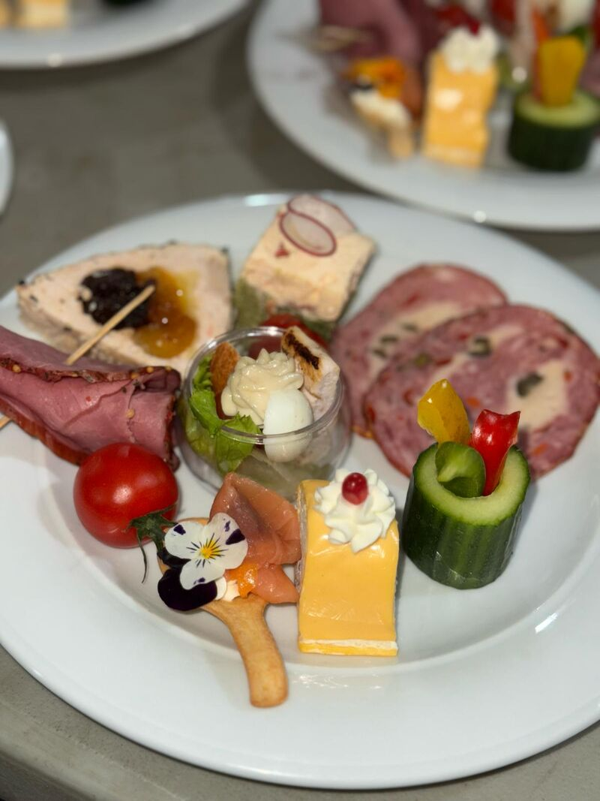

Platou Buzoian Signature
279 lei
5200 g, 4–6 pers. — pastramă de oaie, ceafă de porc, piept de pui, mititei, cârnați de porc, cartofi cu brânză rasă, telemea la jar, murături, mămăliguță.

În inima Buzăului, lângă centrul istoric, gătim zilnic bucătărie tradițională românească și preparate internaționale — platouri la grătar, ciorbe fierte în pâine și deserturi de casă.
Restaurantul Taverna este situat în apropierea centrului istoric al orașului Buzău, într-o clădire cu arhitectură deosebită. Aici te vei simți întotdeauna bine primit — la o masă lungă, cu poftă și fără grabă.
Bucătăria noastră are specific tradițional românesc, dar și preparate internaționale, deserturi delicioase și băuturi pentru toate gusturile. Bucătarii gătesc zilnic, special pentru cei care ne calcă pragul.
De la platourile generoase la grătar și ciorbele fierte în pâine, până la papanașii de casă — servim porții mari, la prețuri corecte, în inima orașului.

Rețete tradiționale românești gătite zilnic, alături de preparate internaționale și deserturi făcute în bucătărie.
Platouri la grătar pentru 2–6 persoane, cu cârnați de Pleșcoi, pastramă de oaie, mămăliguță și murături asortate.
La câțiva pași de centrul istoric, deschis zilnic 11:00–22:00. Ideal și pentru evenimente, nunți și botezuri.

La jar
Aperitive
Tochitură
Asortate
Grătar pe lemn
Gustări reci
AntreuriRecenzii reale ale oaspeților de pe TripAdvisor, Google și RestaurantGuru.
O bijuterie ascunsă a Buzăului. Restaurant de familie, cu un meniu tradițional românesc senzațional și un raport calitate-preț excelent.
Mâncare locală foarte bună, cu porții uriașe. Un must este ciorba de fasole în pâine — o primești într-o pâine scobită. Ieftin și personal amabil.
Aproape de centru, un loc chiar plăcut. Servesc mâncare românească gustoasă, iar ospătarii vorbesc și engleză și îți iau comanda cu drag.
Strada Alexandru Marghiloman nr. 7
Buzău 120031, județul Buzău
lângă centrul istoric